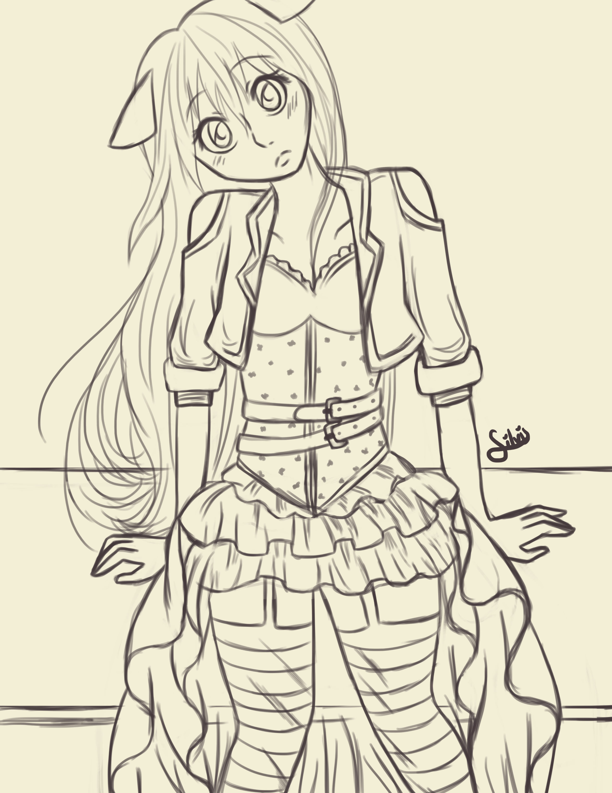
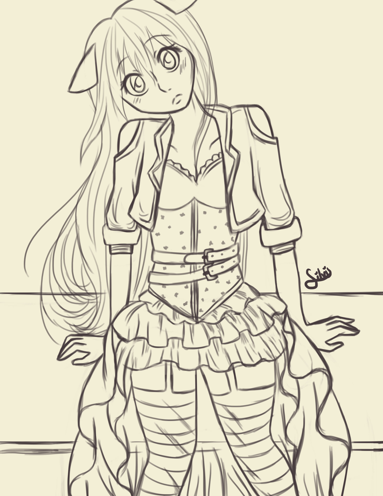
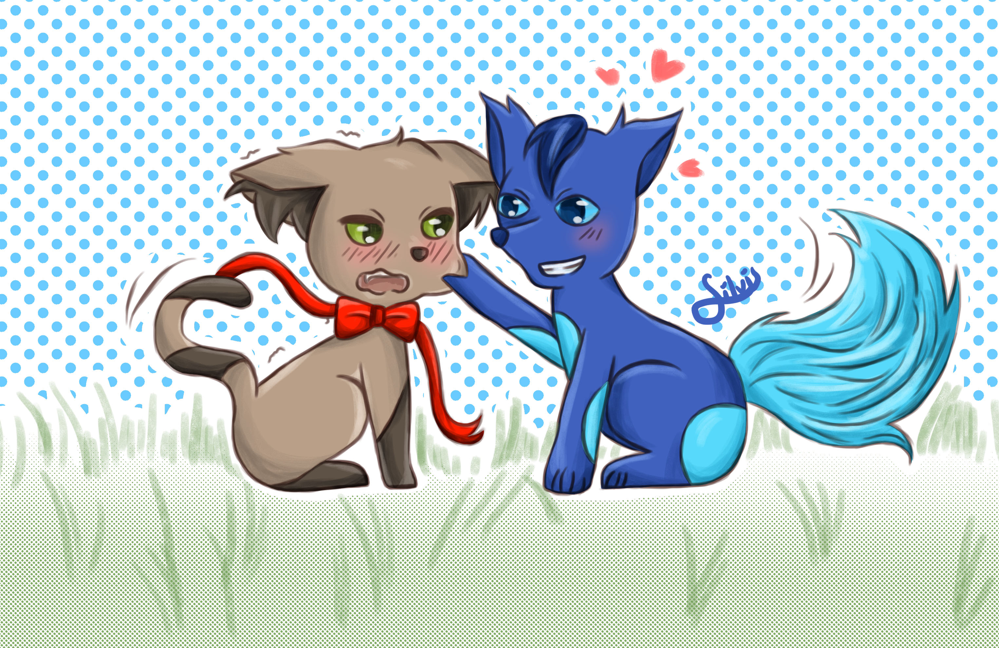
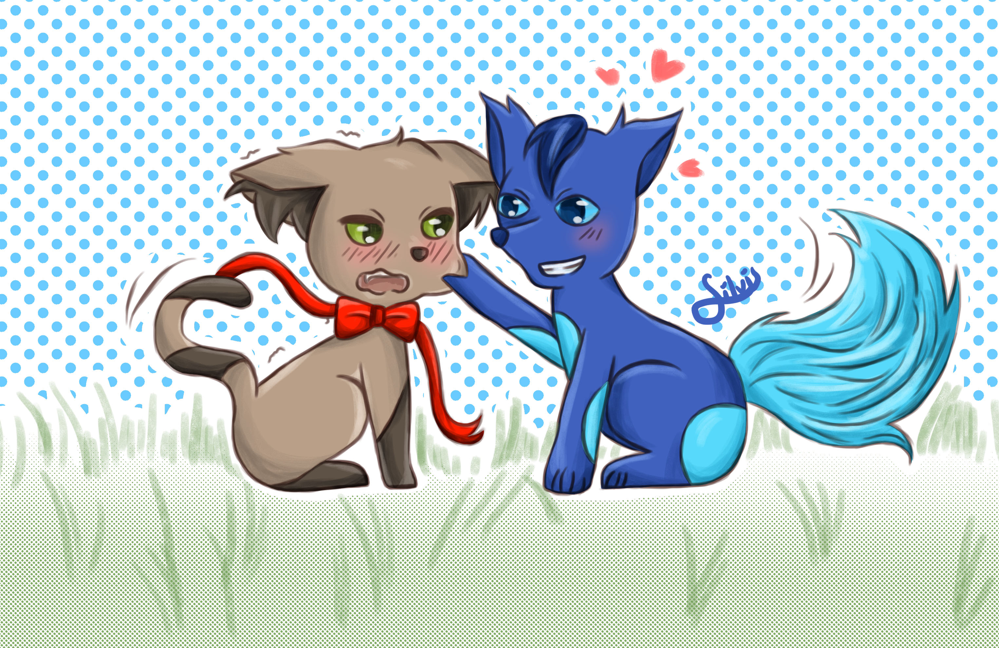

Reto: 30 días dibujando a tu personaje
 

 


Este reto lo hice en todo el mes de Julio del 2015, la lista de temas fue hecha por Kris AJ una artista que pueden encontrar en Facebook. El hecho de tener que seguir una temática cada día anima mucho a dibujar ademas de que ayuda a practicar diferentes estilos, algunos como el Steampunk y el Art Noveau me parecieron super interesantes ♥